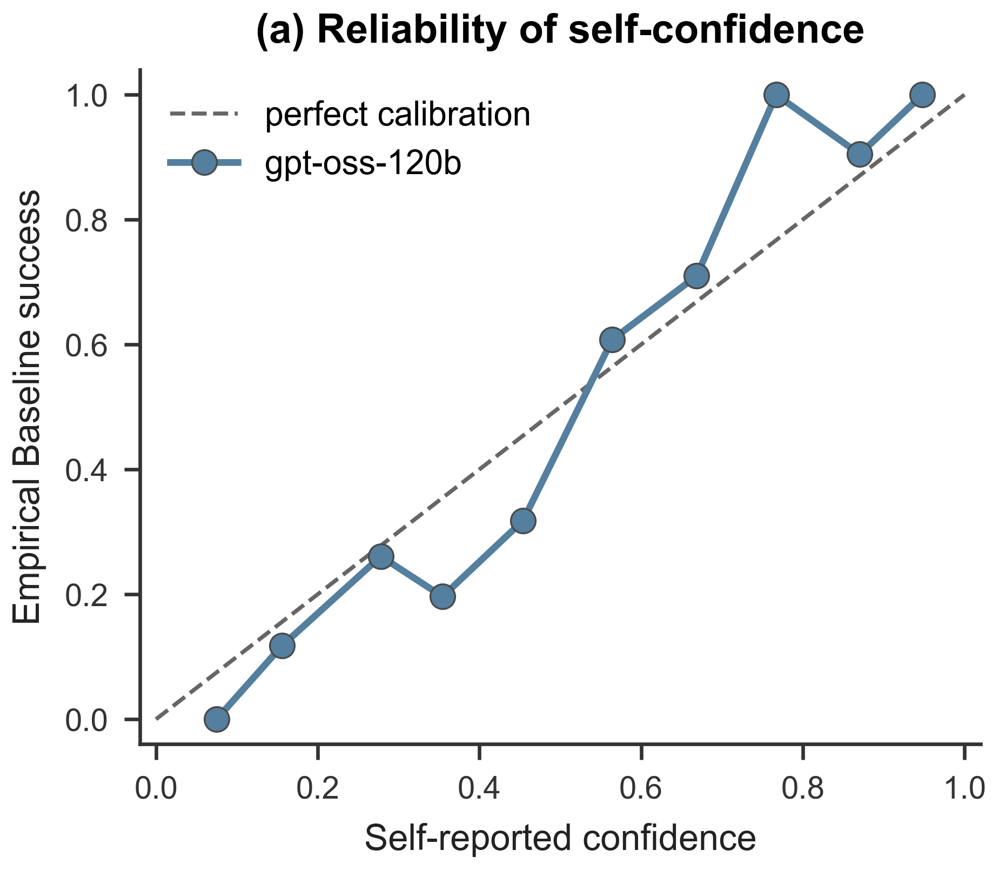
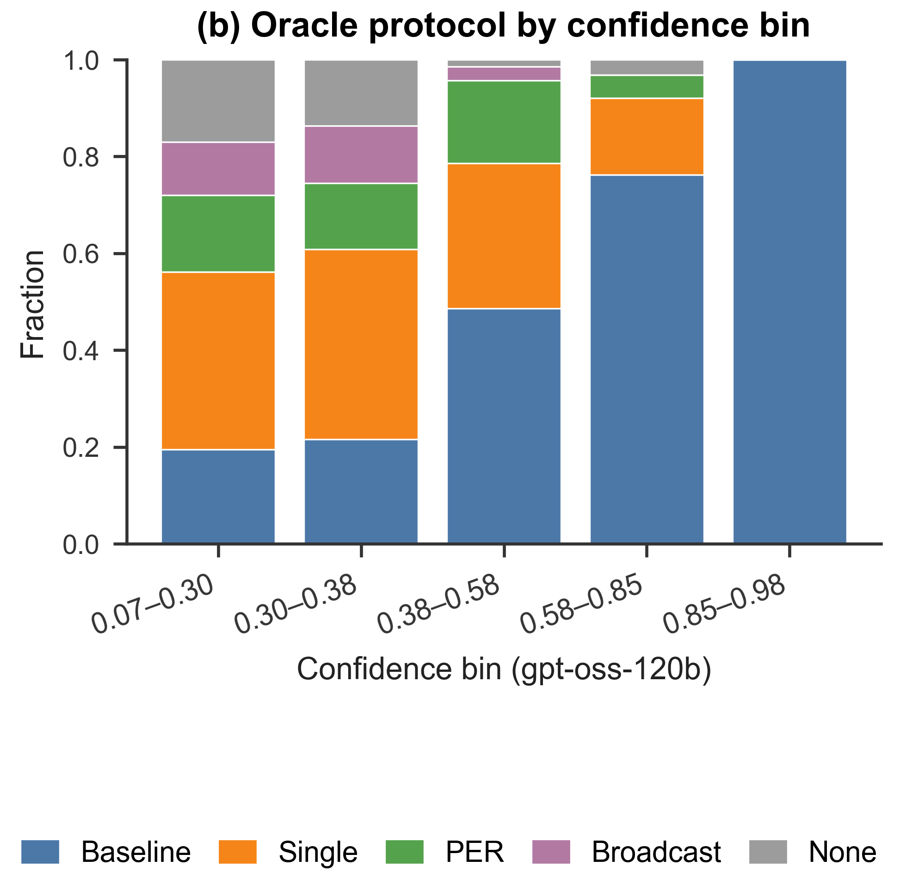
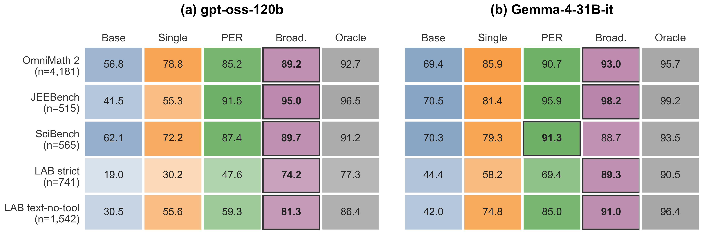

Baseline
One direct attempt, no self-correction.
- Avg. tokens
- 18.2K
- Solve
- 56.3%
EMNLP 2026 Accepted Paper
1Argonne National Laboratory, Lemont, IL, USA · 2Oregon State University, Corvallis, OR, USA
Contact: bellayang@anl.gov
A language model can tell you fairly well that its cheap answer is probably wrong, but not which more expensive collaboration protocol would fix it.
Concretely: a post-answer, pre-collaboration gpt-oss-120b probe ranks Baseline failures at 0.8847 AUROC (4,151 parseable of 4,181; 95% CI [0.8732, 0.8955]). The same score stays useful for “does any collaboration help” (0.7683 AUPRC), but is much weaker for PER-specific (0.1674 AUPRC) and Broadcast-specific (0.1041 AUPRC) value. Confidence supports initial escalation; protocol-specific cost-aware routing remains unresolved.
![Two-panel overview figure. Left panel: stacked bars showing the fixed-order-oracle label composition across difficulty tiers, with Baseline, Single, PER, Broadcast and None shares summing to one within each tier; the Baseline share shrinks and the costlier-protocol and None shares grow as difficulty rises. Right panel: a solve-rate versus average-token-cost frontier in which the self-confidence gate sits up and to the left of the frozen large-language-model routers, which buy extra solves with substantially more tokens.](assets/img/fig1_main_combined.png)
fig1_main_combined).Multi-agent LLM systems get better at reasoning by spending more computation. That raises a deployment question the field mostly skips: when is the extra collaboration actually worth paying for?
To answer it cleanly, we ran every problem under all four protocols and held the solver fixed within each setting. Because every problem has a realized outcome and a realized token cost under every protocol, we can score any routing policy offline against what actually happened, instead of guessing.
What we see is a pair of opposite failures. Cost-conservative policies under-escalate: they stay cheap on problems that stronger collaboration would have solved. Higher-solve frozen LLM routers over-escalate: they buy the extra solves by spending far more tokens than the problem needed. Aggregate routing accuracy hides this, because the two error types cancel in a single score.
That motivates a distinction the paper makes explicit and then measures: predicting failure risk is a different, easier problem than predicting collaboration value. A model's own post-answer confidence handles the first. It does not handle the second.
Multi-agent large language model (LLM) systems can improve reasoning by spending more computation, but deployment requires deciding when extra collaboration is worth its cost. We isolate this decision by running every problem under four protocols while holding the solver fixed within each setting: direct solving (Baseline), iterative self-correction (Single), planner–executor–reviewer collaboration (PER), and multi-agent deliberation (Broadcast). The primary benchmark comprises 4,181 competition-level math problems; paired robustness checks cover four benchmarks spanning competition math, biology, and broader science with two solver families. Across fixed policies, trained routers, and frozen LLM routers, conservative policies under-escalate, whereas higher-solve frozen routers often over-escalate. A post-answer, pre-collaboration gpt-oss-120b probe ranks Baseline failures with 0.8847 AUROC (4,151 parseable cases; 95% CI [0.8732, 0.8955]). The same score remains informative for predicting whether any collaboration helps (0.7683 AUPRC), but is much weaker for identifying PER- or Broadcast-specific value (0.1674 and 0.1041 AUPRC). Separately, the pre-answer self-confidence gate reaches 78.0% solve at 45K tokens, compared with 73.8% at 71.3K for a frozen gpt-oss-120b router and 92.4% for a retrospective fixed-order oracle. Across 10 paired model–condition settings, the oracle adds 23.2–58.3 points of retrospective coverage over Baseline, but protocol profiles vary by task. In the six settings with held-out router evaluations, oracle gaps remain 18.5–28.9 points. Confidence can therefore support initial escalation, while protocol-specific cost-aware routing remains unresolved.
A router picks one action before it sees how any protocol turns out. It looks at the problem text and the metadata it is allowed to see, and it chooses Baseline, Single, PER, Broadcast, or None — and then that choice is executed and billed. Fixed policies (“always Baseline”) are just degenerate routers.
Routers and confidence probes in this work never receive gold answers, correctness labels, oracle labels, or protocol outcomes. The None action abstains; it can be both an oracle label and a router prediction.
We score a policy on three things: solve rate, average tokens, and excess tokens — the mean positive per-problem token overpayment relative to the realized oracle. Choosing a protocol when the oracle label is None counts as over-escalation, and all of those tokens are excess.
For each problem, the oracle is the first successful protocol in the fixed aggregate cost order:
None means all four observed executions failed.
The fixed-order oracle is retrospective. It is a matched, single-realization diagnostic upper bound over one realized outcome per protocol — not a deployable policy, not a per-instance minimum-token oracle, and not an estimate of expected success under repeated sampling. Every oracle figure on this page carries that caveat, including the ones in the tables below.
In the main benchmark, every problem is run once under each of four protocols with the same gpt-oss-120b solver stack, at temperature 0.0. Changing only the collaboration protocol — never the base model — is what isolates protocol value from a change in model capability.
One direct attempt, no self-correction.
Adds iterative self-correction.
Planner, executor, and reviewer roles.
Multi-agent deliberation with shared candidates and peer approval.
Token and solve figures above are on the main held-out split. Note the span: Broadcast costs roughly 34× Baseline in tokens to add 32.6 points of solve rate — averaged over problems that mostly did not need it. That gap is the entire motivation for routing.
These sound like the same question. They are not, and the gap between them is the paper's main result. Imagine one hard math problem and a model that has just produced a cheap Baseline answer.
“Is my cheap answer wrong?”
One yes/no question about an answer the model has already written. The model can inspect its own output and ask how confident it is. Getting this right tells you whether to escalate at all.
Largely works
The post-answer probe ranks Baseline failures at 0.8847 AUROC, 95% CI [0.8732, 0.8955].
“Which expensive workflow would fix it?”
A different question entirely. It asks the model to forecast the behaviour of workflows it has not run, on a problem it just failed — and to judge whether the marginal benefit covers an order-of-magnitude cost increase. Getting this right tells you which action to take.
Largely does not
Same score, protocol-specific targets: 0.1674 AUPRC for PER, 0.1041 AUPRC for Broadcast.
The table below is the cleanest statement of the effect: one score, four increasingly specific targets. As the target narrows from “Baseline fails” toward a named protocol, ranking quality holds up moderately (AUROC stays above 0.72) but precision collapses (AUPRC falls from 0.8950 to 0.1041). The protocol-specific AUPRCs do exceed their rare prevalences — 0.1674 against 8.8%, 0.1041 against 4.2% — so confidence is not devoid of value signal. It is simply not a reliable protocol selector.
| Target | Prevalence (%) | AUROC | AUPRC |
|---|---|---|---|
| Baseline fails | 43.4 | 0.8847 | 0.8950 |
| Any collaboration helps | 36.0 | 0.8544 | 0.7683 |
| PER first success | 8.8 | 0.7259 | 0.1674 |
| Broadcast-only success | 4.2 | 0.7639 | 0.1041 |
Table scrolls horizontally on narrow screens.
Source: anc/failure_and_protocol_value_targets.csv, rows for gpt-oss-120b / OmniMath. Of 4,181 matched problems, 4,151 produce parseable scores (99.28%); the 30 unparseable outputs are excluded rather than imputed.
After gpt-oss-120b produces its Baseline answer, we ask it for P(Baseline correct). The probe sees only the problem, the allowed metadata, and its own Baseline final answer. It sees no reasoning trace, no gold answer, no correctness label, no oracle label, and no collaboration outcome. Failure risk is then 1 − P(correct).

fig3a_reliability).
fig3b_oracle_by_confidence). Confidence separates “Baseline is enough” from “something more is needed”, but within the low-confidence region the costlier labels remain mixed — which is the selection problem the paper leaves open.All policies below are evaluated on the same primary 423-problem held-out test split, so solve rates and costs are directly comparable. Intervals are 95% percentile intervals from 2,000 problem-level bootstrap resamples.
| Class | Policy | Solve (%) [95% CI] | Avg. tokens (K) [95% CI] | Excess (K) [95% CI] |
|---|---|---|---|---|
| Fixed | Baseline | 56.3 [51.5, 61.0] | 18.2 [17.1, 19.2] | 1.7 [1.1, 2.4] |
| Heuristic | Tier-majority | 65.0 [60.5, 69.5] | 28.9 [26.0, 31.9] | 5.7 [3.9, 7.7] |
| Frozen LLM | gpt-oss-120b | 73.8 [69.5, 77.5] | 71.3 [56.5, 86.7] | 37.1 [24.2, 50.6] |
| Frozen LLM | gpt-oss-120b with cost prompt | 78.3 [74.2, 82.0] | 88.6 [71.0, 107.6] | 51.6 [35.2, 68.9] |
| Confidence | Self-confidence gate | 78.0 [74.0, 81.8] | 45.0 [41.6, 48.7] | 14.8 [12.2, 17.4] |
| Retrospective | Fixed-order oracle | 92.4 [89.8, 95.0] | 101.1 [80.1, 124.5] | 0.0 [0.0, 0.0] |
Table scrolls horizontally on narrow screens.
Source: anc/main_routing_heldout.csv. Protocol executions and router/probe calls use deterministic decoding, so these intervals measure benchmark-problem sampling uncertainty, not fresh-run variability.
gpt-oss-120b router. The solve intervals overlap, so this supports a cost-efficiency comparison, not a claim of higher solve rate.None. Its 14.4-point gap to the fixed-order oracle is exactly the unsolved part.gpt-oss-120b router cuts under-escalation to 18.0% but raises over-escalation to 33.3%. Higher-solve Llama and Gemma frozen routers reduce under-escalation to 6–11% while over-escalating on 63–71%.Matched four-protocol outcomes cover 10 complete model-condition settings: two solvers, gpt-oss-120b and Gemma-4-31B-it, each across five conditions — OmniMath (n = 4,181), JEEBench (n = 515), SciBench (n = 565), LAB-Bench strict (n = 741), and LAB-Bench text-no-tool (n = 1,542). These span three broad task families: competition math, engineering entrance-exam STEM and college-level science, and biology multiple choice.
The matched coverage study covers all 10 settings. The deeper post-answer-confidence, held-out-router, and PER/Broadcast interaction analyses cover only six: both solvers on OmniMath, LAB-Bench strict, and LAB-Bench text-no-tool. These are targeted robustness checks, not a claim of broad universality.

fig2_matched_benchmarks).Stronger collaboration has recoverable value in all 10 paired settings: retrospective fixed-order-oracle coverage exceeds Baseline by 23.2–58.3 points. But the protocol profile varies. Broadcast is the strongest fixed protocol in nine settings, while PER exceeds Broadcast by 2.7 points for Gemma on SciBench. This supports task-dependent protocol value, not universal generalization.
| Solver | Setting | n | Baseline | Single | PER | Broadcast | Oracle |
|---|---|---|---|---|---|---|---|
gpt-oss-120b | OmniMath | 4,181 | 56.83 | 78.78 | 85.17 | 89.21 | 92.68 |
gpt-oss-120b | JEEBench | 515 | 41.55 | 55.34 | 91.46 | 94.95 | 96.50 |
gpt-oss-120b | SciBench | 565 | 62.12 | 72.21 | 87.43 | 89.73 | 91.15 |
gpt-oss-120b | LAB-Bench strict | 741 | 19.03 | 30.23 | 47.64 | 74.22 | 77.33 |
gpt-oss-120b | LAB-Bench text-no-tool | 1,542 | 30.54 | 55.64 | 59.27 | 81.26 | 86.38 |
Gemma-4-31B-it | OmniMath | 4,181 | 69.39 | 85.94 | 90.65 | 92.99 | 95.67 |
Gemma-4-31B-it | JEEBench | 515 | 70.49 | 81.36 | 95.92 | 98.25 | 99.22 |
Gemma-4-31B-it | SciBench | 565 | 70.27 | 79.29 | 91.33 | 88.67 | 93.45 |
Gemma-4-31B-it | LAB-Bench strict | 741 | 44.40 | 58.16 | 69.37 | 89.34 | 90.55 |
Gemma-4-31B-it | LAB-Bench text-no-tool | 1,542 | 41.96 | 74.77 | 85.02 | 91.05 | 96.37 |
Source: anc/matched_protocol_coverage.csv. SciBench under Gemma-4-31B-it is the one setting where PER (91.33) exceeds Broadcast (88.67).
| Solver | Setting | n parseable / total | Failure AUROC [95% CI] | ECE | Brier |
|---|---|---|---|---|---|
gpt-oss-120b | OmniMath | 4,151 / 4,181 | 0.8847 [0.8732, 0.8955] | 0.0852 | 0.1314 |
gpt-oss-120b | LAB-Bench strict | 719 / 741 | 0.5814 [0.5410, 0.6165] | 0.3474 | 0.3432 |
gpt-oss-120b | LAB-Bench text-no-tool | 1,510 / 1,542 | 0.6069 [0.5808, 0.6347] | 0.2132 | 0.2874 |
Gemma-4-31B-it | OmniMath | 4,178 / 4,181 | 0.8012 [0.7872, 0.8162] | 0.1594 | 0.1726 |
Gemma-4-31B-it | LAB-Bench strict | 733 / 741 | 0.8637 [0.8359, 0.8894] | 0.1460 | 0.1506 |
Gemma-4-31B-it | LAB-Bench text-no-tool | 1,542 / 1,542 | 0.7337 [0.7110, 0.7562] | 0.1100 | 0.2117 |
Source: anc/postanswer_confidence.csv. The headline 0.8847 AUROC is the gpt-oss-120b / OmniMath cell; the same probe reaches only 0.5814 for gpt-oss-120b on LAB-Bench strict. Confidence quality is not a fixed property of a model.
| Solver | Setting | n | Baseline solve | Router solve [95% CI] | Oracle solve | Oracle gap (pts) |
|---|---|---|---|---|---|---|
gpt-oss-120b | OmniMath | 628 | 0.5685 | 0.6672 [0.6306, 0.7038] | 0.9268 | 26.0 |
gpt-oss-120b | LAB-Bench strict | 112 | 0.1875 | 0.5625 [0.4732, 0.6607] | 0.7679 | 20.5 |
gpt-oss-120b | LAB-Bench text-no-tool | 232 | 0.3060 | 0.5733 [0.5086, 0.6379] | 0.8621 | 28.9 |
Gemma-4-31B-it | OmniMath | 628 | 0.6943 | 0.7659 [0.7309, 0.7978] | 0.9570 | 19.1 |
Gemma-4-31B-it | LAB-Bench strict | 112 | 0.4464 | 0.7054 [0.6161, 0.7857] | 0.9107 | 20.5 |
Gemma-4-31B-it | LAB-Bench text-no-tool | 232 | 0.4181 | 0.7759 [0.7198, 0.8276] | 0.9612 | 18.5 |
Source: anc/heldout_router_evaluation.csv. The router improves over Baseline by 7.2–37.5 points in all six settings, yet remains 18.5–28.9 points below the retrospective fixed-order oracle. Relative to Tier-majority, gains are mixed: paired differences range from −8.0 points (gpt-oss-120b, LAB-Bench strict, CI [−17.0, 1.8]) to +25.0 points (Gemma-4-31B-it, LAB-Bench strict, CI [16.1, 33.9]) — see anc/heldout_router_paired_differences.csv.
Conditional on Baseline and Single both failing, Broadcast exceeds PER by 9.6–10.7 points on OmniMath and 30.8–44.6 points on LAB-Bench. Nevertheless, PER-only successes remain in every setting — 2.4–11.1% of these conditional subsets — so Broadcast does not pointwise dominate PER. A router that always escalates to the most expensive protocol therefore leaves solves on the table as well as burning tokens.
Source: anc/per_broadcast_interaction.csv.
The release has three pieces: the code repository, the dataset card with matched protocol traces and per-problem outcome labels, and the research card. Machine-readable aggregate tables ship alongside the paper; every number on this page comes from them.
To get the code and set up an environment:
git clone https://github.com/ChihHsuan-Yang/EMNLP_Cost-Aware-Protocol-Routing.git
make setup
make testSee the repository for the exact, tested commands. The lines above are the generic entry points only; the README is authoritative for environment setup, data download, and the analysis and figure pipelines. Pick a reproduction path in Reproduce the paper below.
Trace and per-problem outcome artifacts are subject to each upstream benchmark's terms.
There are three distinct entry points, ordered by what they cost you. Start at the top; each one is a superset of the effort of the one above it.
All three assume you have done this first:
git clone https://github.com/ChihHsuan-Yang/EMNLP_Cost-Aware-Protocol-Routing.git
cd EMNLP_Cost-Aware-Protocol-Routing
make setupmake setup creates a local virtual environment and installs the package into it; the other targets use it automatically.
Entry point 1
No model API · no download · minutes
Runs the pipeline end to end on a tiny committed fixture, purely to prove your checkout and environment work. It does not reproduce any published number.
make smokeEntry point 2
No model calls · released outcomes · deterministic
Recreates the principal tables and figures from the released per-problem outcome and cost records. This is the path that reproduces published numbers, because the model outputs are already fixed on disk.
make reproduce-tablesPaper-to-code matrix: which script makes which table or figure →
Entry point 3
Needs model endpoints · substantial compute
Reruns Baseline, Single, PER and Broadcast to generate fresh traces and outcomes. Requires a compatible OpenAI-compatible endpoint serving the solver models, and substantial compute — the matched design executes every protocol on every problem.
Before spending anything, exercise the whole four-protocol pipeline offline against the bundled mock backend — no endpoint, no cost:
python -m protocol_routing_exec.run_protocol \
--dataset-config configs/datasets/fixture_tiny_math.yaml \
--model-config configs/models/gpt_oss_120b.yaml \
--protocol-config configs/protocols/baseline.yaml \
--provider-config configs/providers/mock.yaml \
--limit 4 --output-dir outputs/mock_demoSwap configs/providers/mock.yaml for configs/providers/openai_compatible.example.yaml and set INFERENCE_BASE_URL and INFERENCE_API_KEY to run against a real endpoint. Repeat for each of the four protocol configs. See the repository for the full, tested workflow.
Three different things, and they are not interchangeable. (a) Exact reproduction from the released outcomes is deterministic and matches the published tables to the last digit, because the model outputs are fixed artifacts and the analysis over them is deterministic. (b) A functional rerun with compatible public models will produce similar findings but not identical numbers — different serving stacks and model builds give different outputs, so the qualitative conclusions should hold while individual figures move. (c) Exact reproduction of the original historical execution is not possible. The original serving environment no longer exists and no model snapshot was version-pinned, so those specific traces cannot be regenerated; they can only be read from the release.
docs/reproduction/paper_artifact_matrix.mdThese are the paper's own stated limitations, and they bound how far every number on this page travels.
Please cite the arXiv preprint. The EMNLP 2026 proceedings entry does not exist yet; we will update this block when volume and page numbers are assigned.
@article{yang2026protocolrouting,
title = {LLMs Can Predict Failure Risk, But Struggle to Predict Which
Collaboration Protocol Pays Off: Cost-Aware Protocol Routing
Across Reasoning Tasks},
author = {Yang, Chih-Hsuan and Jiang, Jingyan and Yang, Cheng-Hau and
Vasudevan, Vikram and Zheng, Huihuo and Vishwanath, Venkatram
and Thakur, Rajeev},
year = {2026},
eprint = {2608.14927},
archivePrefix = {arXiv},
primaryClass = {cs.CL},
url = {https://arxiv.org/abs/2608.14927},
note = {Accepted at EMNLP 2026}
}This research used resources of the Argonne Leadership Computing Facility, a U.S. Department of Energy (DOE) Office of Science user facility at Argonne National Laboratory (ANL) operated under Contract No. DE-AC02-06CH11357.
Questions, corrections, or requests about the released artifacts: bellayang@anl.gov.